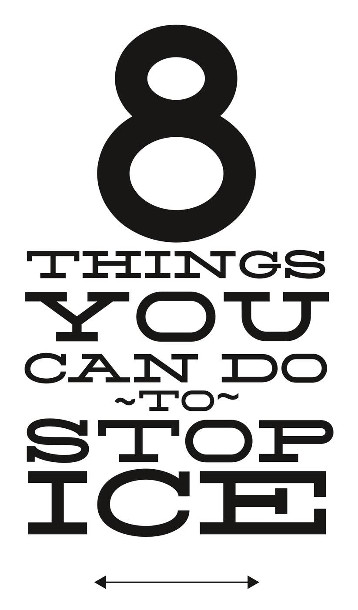
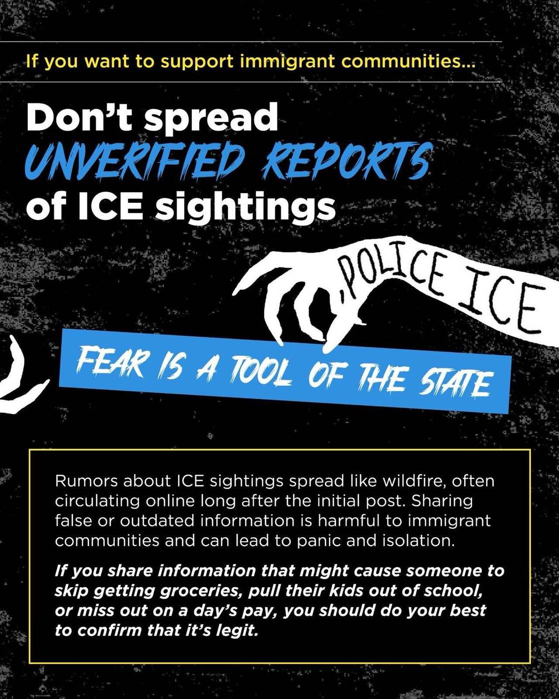
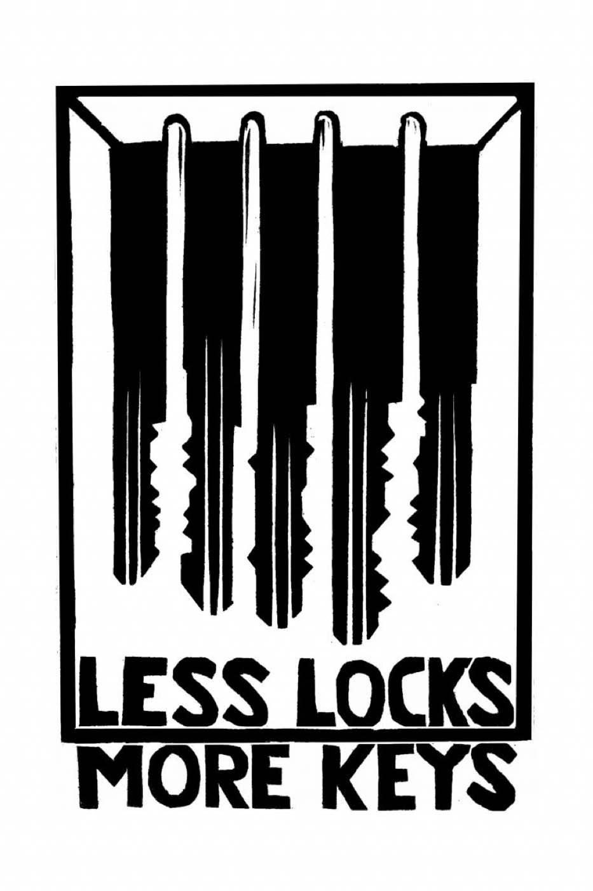

The Trump administration is paving the way for mass deportations by building new prison camps and invoking the Alien Enemies Act, which was used to justify the internment of Japanese Americans during World War II. Motivated by nativism and white nationalism, Steven Miller and other officials are attempting to ethnically cleanse the United States, while tech and prison companies profit on lucrative government contracts and corporations continue to exploit immigrant labor. Knowing that mass deportations will inflict devastating costs, Trump has chiefly been concentrating his efforts in cities like Chicago and Denver that are governed by his political adversaries.
Nonetheless, people are getting organized. Communities across the US are mobilizing rapid response networks that can respond to raids and support those targeted by state violence. Students across the US are staging walkouts; people are holding mass demonstrations and fighting back against deportations.
If we fail to stand in solidarity with those targeted by Immigration and Customs Enforcement (ICE) today, the same infrastructure of repression will eventually be turned against others, as well. An injury to one is an injury to all!
Do your part to melt the ICE.
Eight Things You Can Do to Stop ICE

Click on the image to download the PDF. Please print these out and distribute them in your community!
Know Your Rights—Educate Your Community
Learn your rights in interactions with ICE and law enforcement. Trump officials have complained that people knowing their rights makes it “very difficult” to carry out raids. Asserting our rights can disrupt their plans, delay their efforts, and shift the power dynamics in encounters with law enforcement. Distribute “Know Your Rights” cards and fliers in your community. Organize teams to get them into schools and workplaces. Host a training at your local community center, church, or union hall. Publicizing this information is an chance to get people together to strategize about how to accomplish the other tasks on this list.
Vet Information—Stop Rumors
Disinformation spreads quickly when people are afraid. Set up hotlines, Signal loops, and social media accounts that can vet information, verify reports of ICE activity, and circulate reliable updates. If your area already has a hotline, volunteer to help keep it running. Don’t amplify rumors; when you see them spreading, debunk them. Reports about ICE activity should include the exact time, date, and location of the sighting, the number of agents, and a visual description of their uniforms, vehicles, and badges—or better still, photographic evidence.

For more information, continue reading here.
Organize Rapid Response Networks
Organize a rapid response network to mobilize against ICE raids by recording their activity, providing support to the targeted, and organizing an immediate response. Documenting ICE activity has proven useful for understanding how they behave; it has also helped people in court. Wherever possible, block or slow their actions. In the past, crowds mobilized by rapid response networks have blockaded ICE deportation vans and protested outside ICE facilities.
You can read about some rapid response networks here and here.
Organize Mutual Aid—Support Bail Funds
ICE raids disrupt lives and break families apart. Many people are afraid to attend school or go to work for fear of being kidnapped by ICE. Organize mutual aid programs to provide support to those in hiding and to families whose breadwinners have been abducted. Start a free grocery program. Deliver meals. Connect with existing support networks and organizations to expand their efforts. Support bail funds to get arrestees out of the system as soon as possible.
Fight Criminalization—Shut out the Police
Ordinary interactions with police are one of the chief risks to those targeted by ICE. A single false criminal charge could ruin a person’s life, even if it would never hold up in court. Encourage neighbors and coworkers not to call the police. Organize neighborhood networks, conflict resolution projects, and other ways to address community needs without involving the criminal “justice” industry. Debunk false narratives about rising crime rates—these are just excuses to increase the scope of repression and the profits of those who invest in it. Explain what everyone has to gain by standing in solidarity with those who are on the receiving end of criminalization. Publicly shame police officers and other mercenaries who sell their capacity to inflict harm to the highest bidder.
Stand In Solidarity with ICE Detainees—Fight to Abolish ICE
Stand in solidarity with those locked inside ICE facilities. Support their efforts to organize. Prisoners in many ICE facilities organize hunger strikes and labor stoppages demanding better food, better conditions, access to healthcare, and legal representation. Organize to prevent the construction of new ICE facilities. Mobilize against contractors that work with ICE or supply technology to ICE. Connect the struggle against ICE to other organizing within and against prisons.
Connect Communities
These tactics will be most effective if you pursue them in community with those who are immediately at risk. For example, if you maintain a platform sharing verified sightings of ICE in your community, this will do little good unless it reaches those who need that information most. Strengthen the ties between those who are targeted by ICE and the rest of your community.
Build a Culture of Resistance against ICE and State Repression
Build a culture of resistance in your neighborhood, school, or workplace. Make the walls of your community speak with stickers and posters. Encourage non-cooperation with ICE. Strategize with others in your community about how to support those facing repression and take the offensive against those who are scapegoating the undocumented.
Every time ICE wants to attack your community, they should know that their activity will be recorded and reported, that people will converge on them wherever they show up, that there will be consequences for their actions. Every operation should cost them more resources than the last. If all of us do what we can, the accumulation of our efforts will save lives and preserve communities.

For More Information
- Immigrant Legal Resource Center
- Order “Know Your Rights” Cards
- When ICE Comes Calling, Rapid Community Responses Can Make a Difference
- ICE Watch Programs Can Protect Immigrants in Your Neighborhood
- A Guide for Employers: What to Do if Immigration Comes to Your Workplace
- Think There’s Nothing You Can Do to Stop ICE? Think Again.
- Willem van Spronsen’s Statement about Why He Took Action against ICE
Know Your Rights:
You have constitutional rights!
- DO NOT OPEN THE DOOR if an immigration agent is knocking on the door.
- DO NOT ANSWER ANY QUESTIONS from an immigration agent if they try to talk to you. You have the right to remain silent.
- DO NOT SIGN ANYTHING without speaking to a lawyer first. You have the right to speak with a lawyer.
- If you are outside of your home, ask the agent if you are free to leave. If they say yes, leave.
- GIVE THIS TEXT TO THE AGENT. If you are inside of your home, show the text through the window or slide a card with this text under the door:
I do not wish to speak with you, answer your questions, or sign or hand you any documents based on my 5th Amendment rights under the United States Constitution. I do not give you permission to enter my home based on my 4th Amendment rights under the United States Constitution unless you have a warrant to enter, signed by a judge or magistrate with my name on it that you slide under the door. I do not give you permission to search any of my belongings based on my 4th Amendment rights. I choose to exercise my constitutional rights.
ICE agents often carry administrative rather than judicial warrants. They would like you to think that these are the same, but they are not. If the agent does not have a judicial warrant with all the correct information for the specific person they are looking to detain, they do not have authority to enter private areas without consent, including private areas at a workplace. Talk with your coworkers so that everyone understands which areas are public and private; put up signs and keep doors closed. Create a policy on how to respond if ICE comes to your place of work. You can learn more about how to deal with workplace raids here.